European heavy-duty plugs
Specialised plugs are used for applications where high amounts of power may be required, for example in commercial and industrial installations or, in households, to connect electric stoves. These types of plug may be capable of a higher current than household ones and/or support three-phase power, which is often used in Europe for high-power devices.
Various kinds of industrial and heavy-duty plugs were once in use, with considerable differences between countries. These days, on industrial sites, the IEC 60309 standard has largely taken over, but country-specific standards are still available, often for household and some commercial uses.
16A Perilex socket
Rating: 16A 380V
Perilex plugs are widely used in Germany, Austria, the Netherlands and Sweden for domestic and light commercial applications, especially for hooking up three-phase electric stoves. In Germany and Austria, the use of Perilex plugs for industrial use isn't allowed anymore, instead being replaced by IEC 60309, however they're still common for household uses due to their considerably smaller size. Aside from the 16A version, displayed here, a less common 25A model is also available.
The socket is recessed, preventing users from accidentally touching the pins while they're live, while the advanced contact for the protective earth ensures that it is always connected first.
Note that the wiring configuration of Perilex sockets has changed over time, with the L1 and L3 (formerly R and T) wires having swapped place (the socket shown here follows the old standard). When powering electric motors, this could be a problem, as it may rotate in a different direction than desired depending on the socket it's plugged into.
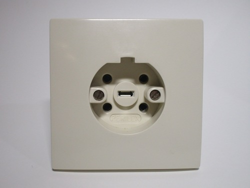 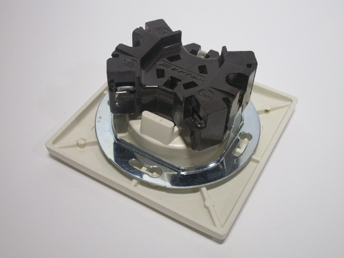 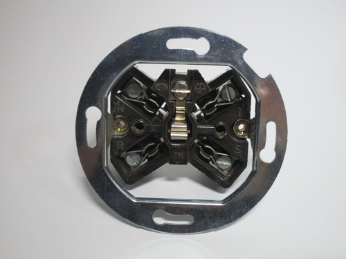{kind=link}
{kind=link}
{kind=link}
High-amperage French plug
Rating: 20A 400V
France has a significant amount of specialised heavy-duty plugs and sockets for single- and three-phase uses (with or without neutral).
It's interesting to note that all outlets have to have safety shutters, a mandatory feature in France.
The plug shown here is a 20A single-phase version, built by Legrand.
Despite being rated for 400V, the three-phase voltage in France, this model is most commonly used for single-phase (230V) loads, and adaptors exist to convert it to a standard CEE 7/5 power socket.
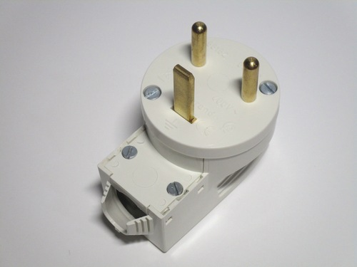 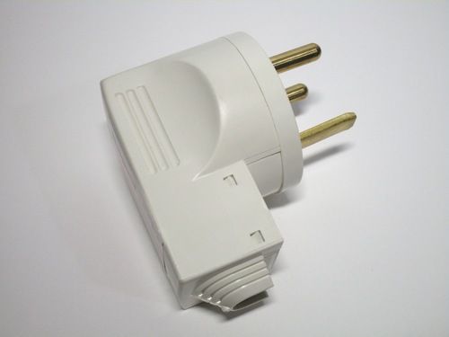 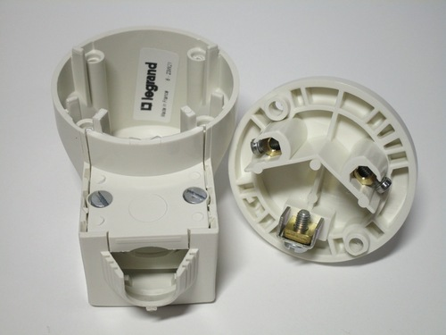{kind=link}
{kind=link}
{kind=link}
IEC 60309 industrial plugs and sockets
This family of highly resistant plugs and sockets is widely used in 230V countries for single- and three-phase industrial, commercial and heavy-duty applications. Their sturdy costruction is essential to protect them from the types of environment they may be subjected to.
The 16A ones are the most commonly found, either in the single-phase, three-phase without neutral or three-phase with neutral versions, however many more types are available, with different pin configurations and current and voltage ratings, including 125V AC and SELV (safety extra low voltage). Colour coding is used to make it easy to match a plug to a specific socket.
Three-phase 16A plug
Rating: 16A 400V
This particular example is a 5-pin three-phase plug, rated at 16A 380-415V. The five pins are for the three phases (L1, L2, L3), earth (PE) and neutral (N); versions of this connector also exist that don't have a neutral connection, for use with balanced loads such as motors.
The plug is held together without any screws: to open it up a plastic clip has to be pushed in with a screwdriver, then the two halves can be rotated and separated. One half (coloured red) contains the terminals, while the other (coloured grey) has the strain relief, consisting of a plastic ring which is rotated until the cable is held firmly in place.
Notable features are that the wire terminals are well-separated and shrouded by plastic, protecting against possible water ingress, as the plug is rated to be splash-proof (IP44), while the earth connection uses two screws, for a better connection and ensuring that it's the last conductor to be disconnected in case the cord is being pulled.
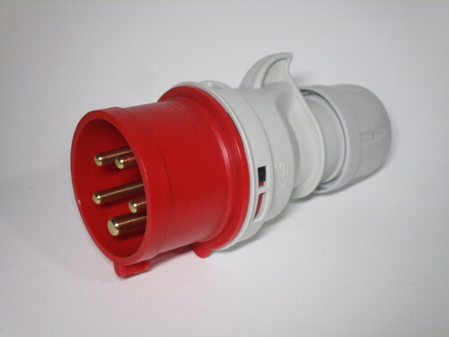 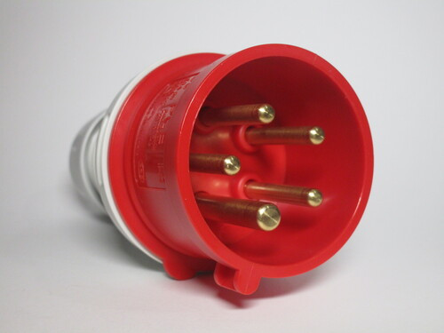 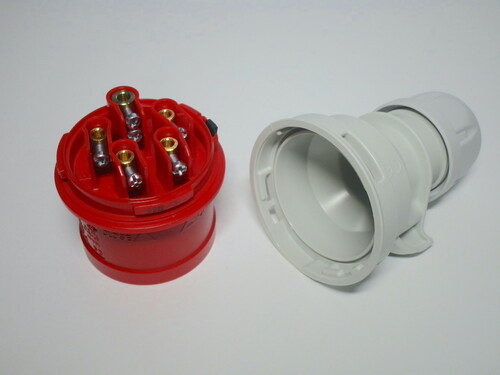{kind=link}
{kind=link}
{kind=link}
Water-resistant single-phase plug and socket
Rating: 16A 250V
This single-phase plug and matching socket, both made by Merlin Gerin, have an IP67 rating, and are thus made to resist being submerged in water. To ensure this protection, the socket and plug connect together using a twist-lock ring (present on the plug) and rubber grommet, which seal them together and prevent water intrusion. The spring-loaded lid on the socket also has a rubber seal, mantaining this protection even once the plug is removed.
 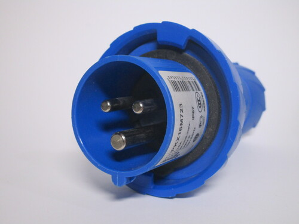
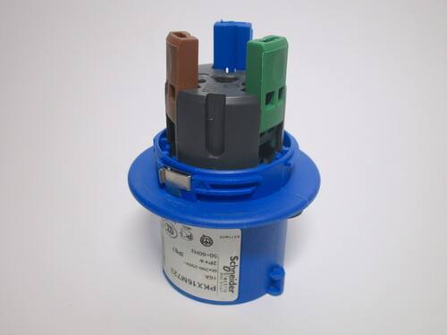
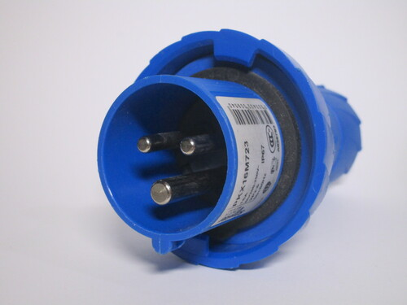
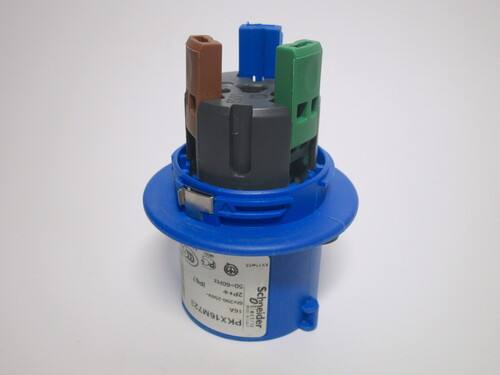
{kind=link}
{kind=link}
The wire terminals on both the plug and outlet are interesting: colour-coded wire levers are present, which a wire is inserted into, without needing to be stripped. Once the lever is closed a metal "blade" cuts into the wire insulation and forms a stable connection. This enables a plug to be wired extremely easily and - aside from the screwdriver needed to disassemble it initially - without any tools.

 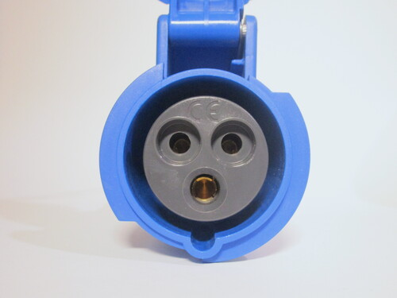
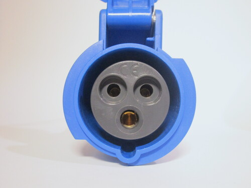
{kind=link}